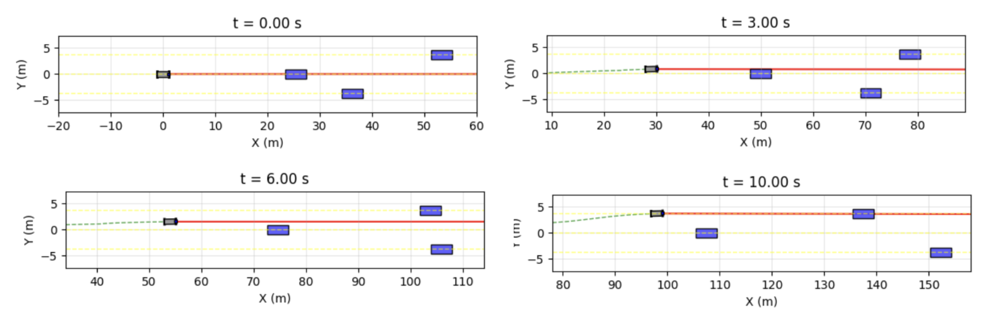
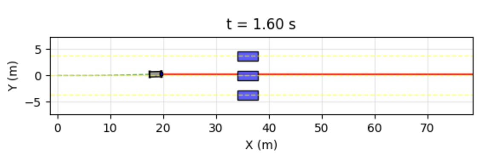
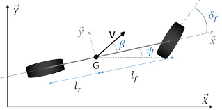
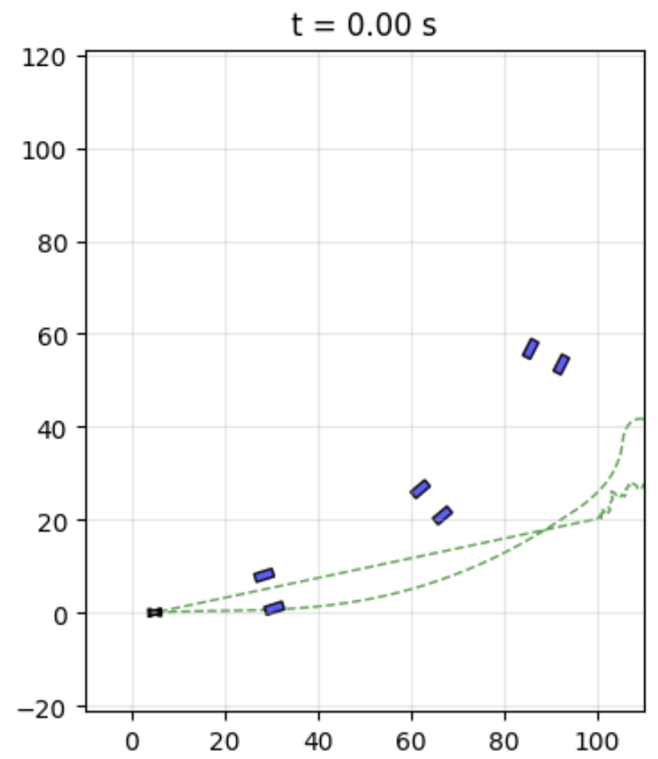
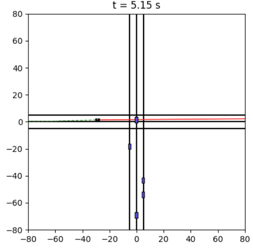

A full-stack autonomous driving framework — from noisy perception through behavior planning to model predictive control — enabling an ego vehicle to detect surrounding traffic, decide when to change lanes, generate a dynamically consistent reference, and track it using a Drake-backed MPC over a 6-state bicycle model.
Each layer has a single responsibility and a clean interface to the next. Perception feeds noisy obstacle estimates up to the behavior planner; the planner outputs a 4-state reference request; trajectory generation expands this to a 6-state horizon; the MPC solves for optimal controls; the bicycle model integrates forward. Any layer can be swapped independently.
TrajectoryRequest with target lane, cruise speed, and pre-computed quintic coefficients.BehaviorPlanner base FSM and the ObstacleAwarePlanner extension. Designed the TTC + distance lane-scoring heuristic, the hysteresis/cooldown anti-oscillation logic, the quintic polynomial maneuver generator, and the intersection conflict detection mode.The framework was evaluated across five progressively harder scenarios. It performs well in its design envelope — straight, unidirectional traffic — and the failure modes outside that envelope are well-understood and point to concrete future work.





| # Obstacle Vehicles | Trials | Successes | Rate |
|---|---|---|---|
| 1 | 5 | 5 | 100% |
| 2 | 5 | 5 | 100% |
| 3 | 5 | 5 | 100% |
| 4 | 5 | 4 | 80% |
| 5 | 5 | 5 | 100% |
| 6 | 5 | 5 | 100% |